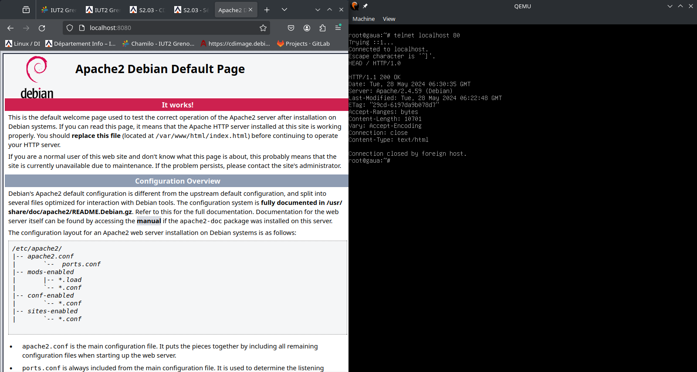

Ce projet s'est déroulé en mai 2024. Les technologies utilisées étaient le Bash sur la machine virtuelle "QEMU". Les compétences évaluées étaient l'administration de systèmes informatiques complexes communicants.
Cette SAE a été réalisée en solo.
L'objectif de cette SAE était d'installer et de configurer Debian, Apache2, Postgresql, PHP et PhppgAdmin sur une machine virtuelle.
Suite à cela, j'ai réalisé un tutoriel expliquant chaque étape des installations.

Illustration du projet lors de la connection sur le serveur Apache2